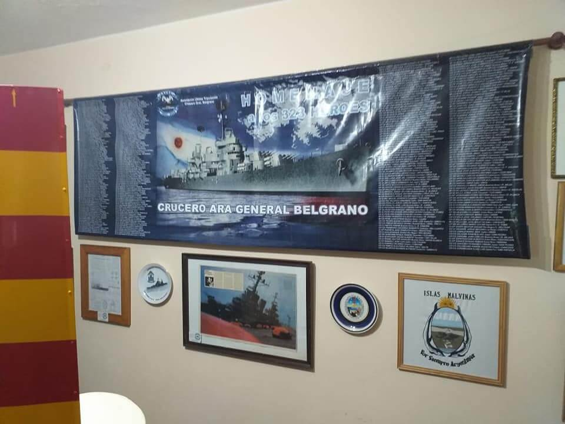

Interior del Museo

Interior del Museo
Misíl antiaéreo SEA-CAT
Maqueta del Crucero A.R.A. Gral. Belgrano
Vajilla y otros elementos del Buque
Elementos varios
Placa del cenotafio de la Asociación
Sector de fotografías
Vainas de diferente calibre
Pasillo del Museo
Interior del Museo
Balsa autoinflable